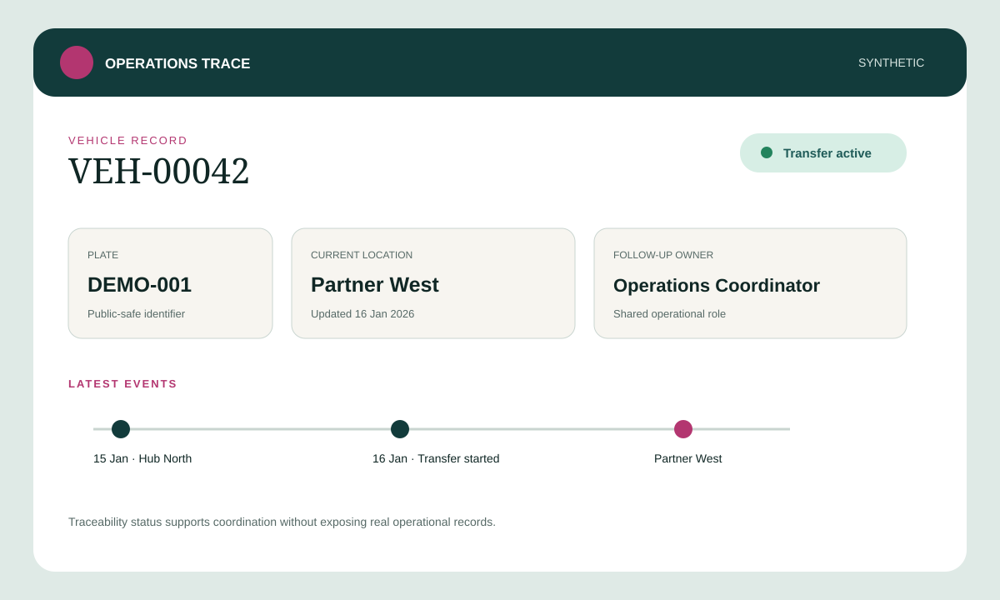
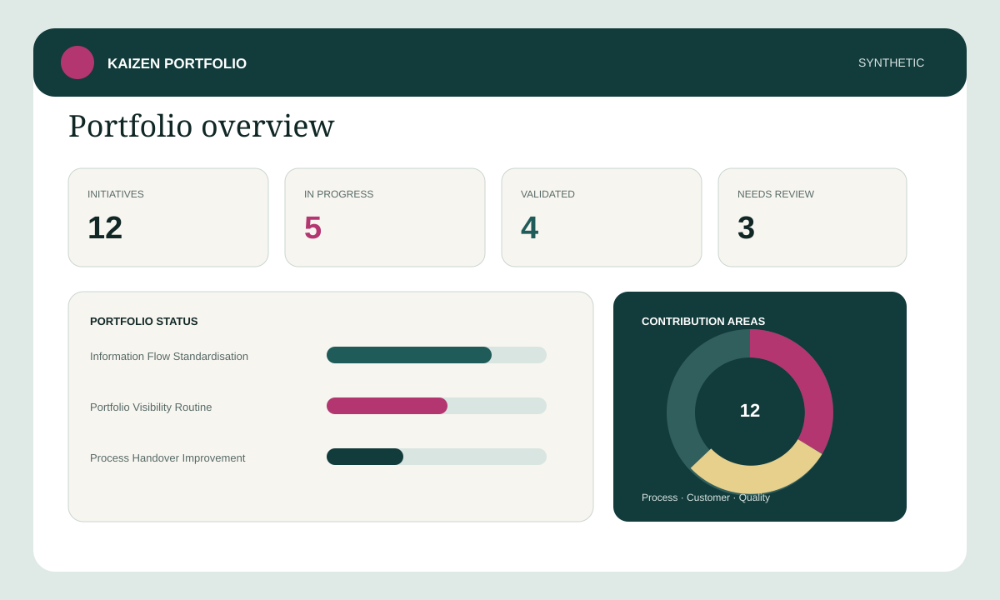

Operations & Digital Solutions
Vehicle Operations Traceability Platform
A conceptual experience that brings consultation, movement history and transfer follow-up into one clear operational view.
Communication · Business · Data
Where communication meets data.
Commercial Strategy & Business Transformation | Data Analytics, Automation & Continuous Improvement
I connect people, processes and data to make commercial and operational decisions clearer.
02 / Work
Business-first case studies showing how digital tools can make operations clearer, more traceable and more useful for decisions.

Operations & Digital Solutions
A conceptual experience that brings consultation, movement history and transfer follow-up into one clear operational view.

Data & Continuous Improvement
An analytics-oriented experience connecting portfolio visibility, initiative diagnosis and improvement priorities.
Broader analytical practice
Earlier portfolio evidence across KPI tracking, customer segmentation, CRM and lead analysis, campaign performance and decision support.
A capability overview—not a separate invented project or quantified claim.
03 / Approach
The connecting thread is not a tool. It is the ability to translate between people, operating reality and evidence.
Translating needs, aligning perspectives and creating usable routines.
Mapping flows, clarifying handoffs and improving consistency.
Structuring indicators and information to support action.
04 / Impact
Reduced physical document handling and supported a more sustainable routine.
Improved consistency and reliability through a shared technical reference.
Clarified information for partners and reached the final stage of a customer-category Kaizen award.
Recognition
Public copy intentionally omits unconfirmed quantified outcomes and confidential implementation details.
05 / About
My experience has developed where commercial, technical and operational work must stay aligned. I have worked with indicators, CRM and lead analysis, operational controls, Lean initiatives and digital tools.
My background in Organizational Communication shapes how I approach transformation: a solution creates value when people understand it, trust it and can use it in their routine.
06 / Experience
Mar 2026–Present
Volvo Trucks
Analytics and automation for commercial and operational routines, supporting KPI visibility, process standardisation and stakeholder coordination.
Jun 2024–Mar 2026
Volvo Trucks
Dashboards, CRM and lead analysis, NPS, automation, budget monitoring, Lean initiatives and cross-functional project coordination.
Jul 2024–Dec 2025
Cacto Comunicação · UTFPR Junior Enterprise
Client relationships, commercial proposals, digital campaigns, supplier interfaces and project routines.
May 2023–Jun 2024
Volvo Trucks
Dealer support in Brazil and assistance with Latin American export routines, connecting documentation, transport partners and communication.
07 / Skills
Commercial strategy · Business transformation · Project coordination · Stakeholder management · Process mapping
Power BI · Power Query · Excel · Data analysis · KPI development · CRM & lead analysis
Python · Power Apps · Power Automate · VBA
Lean Thinking · Kaizen · PDCA · Process standardisation · Operational excellence
08 / Resume
The current resume files contain personal contact information and document metadata, so they remain intentionally unpublished. Public-safe English and Portuguese copies can be added after review.
Not publicly available
09 / Contact
For professional contact, connect through LinkedIn or explore my public work on GitHub.